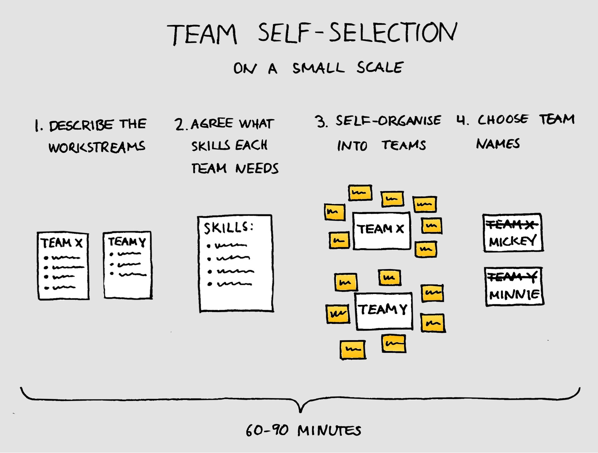

Self-selecting teams on a small scale

You don’t need a lot of people for self-selection to be useful.
Self-selection is a practice where people get to choose for themselves which team they want to be in. Typically, it is associated with large scale agile implementations and obviously, it does make sense to tackle the complicated task of organising 50 or 100 people into teams the same way we as so often solve complicated tasks in agile: self-organisation. But how about using self-selection on a much smaller scale?
In this post, I will describe a recent experience I had with self-selection in our two Scrum teams. Spoiler alert: it worked great!
Read more